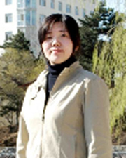

天行健，君子以自强不息
尊敬的各位领导、老师，亲爱的同学们：
你们好！我叫李冠男，是东北师范大学物理系2004级的学生，今天我汇报的题目是：天行健，君子以自强不息。
1985年的冬天,我出生于一个宁静欢乐的工人家庭。和别的孩子一样，我有着无忧无虑、温馨幸福的童年，有着父亲、母亲的疼爱。
也许命运总是愿意捉弄那些幸福的人，在1995年，噩梦悄悄的降临了。在我三年级的那个夏天，父亲由于身体不适，到医院去检查。当我们看到诊断书上那三个赫然醒目的字——“糖尿病”时，全家都
你们好！我叫李冠男，是东北师范大学物理系2004级的学生，今天我汇报的题目是：天行健，君子以自强不息。
1985年的冬天,我出生于一个宁静欢乐的工人家庭。和别的孩子一样，我有着无忧无虑、温馨幸福的童年，有着父亲、母亲的疼爱。
也许命运总是愿意捉弄那些幸福的人，在1995年，噩梦悄悄的降临了。在我三年级的那个夏天，父亲由于身体不适，到医院去检查。当我们看到诊断书上那三个赫然醒目的字——“糖尿病”时，全家都
惊呆了。长久的家族病史使我清楚的知道这种病的恐怖，一场大病足以击垮一个家庭，灾难从那一刻就降临了。在随后父亲得病的这一年半中，家里花光了所有的积蓄，然而祸不单行，母亲也由于单位裁员下了岗，整个家庭陷入了一片愁云笼罩之中。家里没了收入，但父亲的这个病注定他不能再有任何的体力劳动，那时的我才渐渐知道了什么叫苦难。我唯一能做的就是努力学习，我要用我的努力给父母亲一个幸福的未来。不久我上了初中，那时家里已经一贫如洗，唯一的收入就是靠母亲捡破烂换得的一点钱。每到冬天，母亲天不亮就出门，晚上很晚才能回来，还要拖着疲惫的身子去照顾父亲。在冬日的凛凛寒风里，母亲的手都被冻得裂开了口子，那些口子仿佛裂在了我的心上。我不忍看着母亲一个人辛苦，便央求她带我一起去。而母亲却说：“你只要把学习搞好了，妈就满足了。”望着母亲渐渐苍老的脸庞，我含着泪点了点头。我心里暗下决心我一定不会让母亲失望。此时的父亲已不肯再去医院治疗，每日浑身的疼痛折磨得他痛苦难耐，而他只是在无法忍受的时候才吃上几片那种三毛五分钱就可以买一盒的去痛片。我知道这一切都是为了我，而我只有以百倍的努力来学习，这是我唯一可以使他们安心的办法，也是我唯一能够改变命运的办法。
功夫不负苦心人，2001年的夏季我以536分的成绩高出省重点高中分数线近20分考取了抚顺市第一中学。当我拿到录取通知书的那一刻，我才知道原来生命还可以如此幸福。我跑着把通知书拿到家里，给正在家里翘首期待的父亲、母亲看，我知道那一刻他们也是幸福的。他们嘴角上那缕欣慰的笑容，带给我无限的满足。
带着美好的憧憬，我迈入了高中的校门。当时学校知道我家的情况后给我减免了一部分费用。高一下学期，母亲找到了一份在浴池打扫卫生的工作，虽然工作时间很长，要从早晨六点到晚上九点，但是母亲再也不用在外面遭受风吹日晒了。这样全家就靠着母亲这些微薄的打工钱艰苦的生活着。皱纹过早的爬上了母亲的脸庞，由于长时间在水中工作，母亲的手和脚都泡烂了，指甲脱离了手指，露出了花白的肉，伤在母亲的身上，痛却在全家人的心里。然而，命运却总是那么的捉弄人。2003年的元旦那天，我和父亲做好了饭菜，围坐在饭桌旁等待着晚归的母亲。钟表的指针已经指向了九点三刻却仍不见母亲的身影。我和父亲心神不宁。这时，只听楼下几声凄厉的女声喊叫着父亲的名字，当父亲冲下楼时，母亲已经倒在血泊之中，母亲由于下晚班被歹徒用斧刃重伤头部。那一刻，我才明白什么叫“撕心裂肺”。看着母亲躺在手术台上生死未卜，我第一次报怨起上天的不公。为什么，所有的不幸都要降临到我的家庭上。为什么啊!我不信命，我一直以为我所承受的痛楚是我生命中的另一种眷顾，而这一次我真的要绝望了。父亲那憔悴的容颜，一夜之间仿佛苍老了许多，我的心都要碎了。当医生说没有生命危险时，父亲终于松了一口气，我的心也安稳了些许。然而，经过这样一场灾难，本就一贫如洗的家庭，再也无力承受了。此情此景，让我如何忍心再念下去。我再一次向父亲说出不去念书的打算，这样我不仅可以为家里减轻一些负担，还可以赚钱贴补家用。但是我却被父亲狠狠地骂了一顿。父亲坚定地告诉我家里就是砸锅卖铁也要供我上学。从那一刻起，我知道我错了，我是真正地伤了他们的梦啊！我知道我能做的只有更加努力的学习。于是每天早上天还没亮我就起来看书，直到晚上夜深人静，三年高中我没有买过一件衣服，一直穿着那套校服走过春夏秋冬。虽然，我也渴望那温暖的被窝，虽然我也渴望外面那花花绿绿的世界，但我深知父母正用一双企盼的眼睛看着我，他们用那孱弱的力量为我撑起了一片天，我就是他们的梦，我的未来就是他们的全部！
2004年的高考，我终于没有辜负父母的希望，以607分超出入取线50分的优异成绩考入了东北师范大学。面对一纸鲜红的录取通知书，全家都兴奋不已。然而，高兴过后又一个残酷的现实摆在了眼前——那3500元的昂贵学费。家里已经拿不出一点钱了，虽然师范院校的收费是最低的，但是对于我的家庭却依然无法承受。父亲拖着患病的身体，跑东家走西家的去借，跟别人低眉顺眼，终于凑够了费用。看着父亲为我奔波，为我放弃了他最在乎的面子，从那一刻起我便下定决心，我不要让我的父母再重复这样的悲哀，我要用我的努力来改善家里的生活。
当我只身跨入大学校门的那一刻，我觉得幸福就在方寸之间。来到大学里，一切对于我来说都是新鲜的，都市的繁华，大学的奇异，让我眼花缭乱。但我深深的知道家中的父母正在忍受何种煎熬，母亲还在那艰苦的环境中工作，父亲仍旧在病痛时大把吃去痛片。他们的影子时刻印在我的脑海中，激励我去奋进。大学的这种安逸又岂是我能享受的。我只能选择自强，我必须靠我自己的能力为父母去撑起一片天。
初到外地，人生地不熟，做什么都困难，然而自强的信念却始终支撑着我，为了父母我要努力赚钱。于是，我开始了我的家教生涯。刚开始，没有家长愿意用我，毕竟，谁都不想要一个大一的小丫头，但是他们被我的真诚所打动，决定让我试试，我抓住这个难得的机会，终于赢得了家长和孩子的认可。刚刚到大学，需要用钱的地方特别多，书费、伙食费等等接踵而至，压得我无法喘息，为了生计，我不得不接手更多的家教，最多的时候，一天有三个。早上起来先要跑去上课，等下了课就急急忙忙赶到家教那里，然后再赶回来接着上课，上完课还要赶到另外两个家教那里，就像赶场一样跑来跑去，连饭都顾不上吃。有时饿得难受，眼睛花了，上课都听不进去老师讲的内容。要是实在饿急了，就在路边买个馒头，边走边吃，只要几毛钱就把饭的问题解决了。更多的时候，我为了省下那一元钱的车钱，常常是徒步走到家教家。夏天烈日炎炎，汗顺着脸颊大滴大滴的滑落，炽热的柏油马路历练着我的意志；冬天刺骨的寒风把我的脸和手脚吹得失去了知觉，等到进了屋子里，手和脚被屋子里的热气烘烤，便疼痒的钻心，让人无法忍受。我也打过退堂鼓，可是我知道我的家庭以及我的信念不允许我放弃。我曾听过一句话叫做“马儿一生不停的奔跑、鏖战，它唯一的一次躺下，就是在生命结束的那一刻。”我要不停的奋斗，为了我的父母不再辛苦，我是他们的全部，他们又何尝不是我的全部！
大学的生活，在不停地做家教中度过了一天又一天。然而，我终归是个学生，学习是我目前最主要的任务。做家教占用了我大量的学习时间，上课也没有足够的精力听讲。当一次数学小测验结束后，望着满是空白的卷子，我的内心受到了深深的触动。这就是我的大学吗，这就是我用来回报父母的成绩吗，我不能这样下去，我在内心里急切的呐喊着。于是，我调整了作息时间表。由于过去做家教落下了很多课程，我要尽快在短时间内补上来，我只有利用好每天的时间更加努力的去学习。我不能让关心我爱护我的人失望。每天早晨四点钟，当天上还满是星星的时候，当别人还在甜美的梦乡里的时候，我已经坐到了自习室里学习专业课知识，陪伴我的只有天空中那抹深邃的蓝。冬天，天冷得吓人，我多么渴望在温暖的被窝里再睡上一会，可是自强信念始终激励着我奋进。每天晚上直到图书馆十点钟闭馆我才回去，回到寝室后还要去自习室再学一会。夜深人静时，有的只是我笔下“唰唰”的演算声。为了弄懂一道题，为了明白一个知识点，我常常在自习室学到最后，仿佛早已忘记了苦和累。一年中，无论寒来暑往，我始终坚持着。大二的时候，我们要考英语四、六级，我的英语不是很好，这对于我来说又是一个难关。然而，我相信，机会永远是留给那些有准备的人，我利用一切空闲时间来学习英语，在去家教的路上，我也要把英语单词拿出来背上一会，在课间，也要听上一会英语，就连吃饭的时候也是边吃边听。最终，大二一年我一次性的通过了英语四、六级。在我如此执著的坚持下，我的付出换来了收获，大学三年，我连续获得了校长奖学金以及国家奖学金，“优秀学生”等称号，而我的成绩排名始终位列专业第二。在学业上，我可以自豪地说，我没有让我的父母失望！
三年来，我省吃俭用，几乎没买过什么衣服。我没有都市女孩的时尚，但我却拥有一颗坚强的心。岁月匆匆，我凭着各种奖学金、补助、家教、勤工助学等等，一步一步的走了过来。我所得的奖学金，再加上我的家教和勤工助学所得，已经足够我这几年的费用了。我高兴的心情难以言表，我的父母不用再为学费发愁了，我也可以给家里一点节余了，这是我这二十多年来觉得最幸福的时刻。我兴奋的把这个消息告诉了他们，在电话里我依稀的感觉到了他们的幸福，他们是为我骄傲的。然而父母却怎么也不肯要我的钱，他们说我在外边用钱的地方多，不比他们。我的母亲啊，为了我她失去了这个年龄女人应该拥有的很多东西，没用过化妆品，没买过衣服。我的父亲，为了我，有病不去医院也不吃药，拖着重病的身体为我劳累。我这一生都还不起他们的情啊！
大二学年，我担任了我们班级的团支书，带领我们全体同学获得了“标兵班级”的荣誉称号。大三学年，我担任了我们年级的年级长，我担任的工作是没有具体明确的任务，工作复杂，工作量大。由于我还有很多家教，我没有大块的时间去工作，只有采取“化整为零”的工作方法，在空余时间里更加努力的工作，我不能让同学们失望。与此同时，我还担任着学校勤工助学的工作，因此学习与工作发生冲突，工作与工作发生冲突是常有的事；学习和工作上的压力是很大的，可是天生的使命感和责任感让我不能低头，我统筹安排时间，抓紧一切时间去学习、工作。生活更加辛苦了，学习也更紧张了，但我没有一刻放松过自己，我明确的知道我来这里的目的。我常常累得上课便伏在桌上睡着了，醒过来时便充满了自责，于是就更加努力的学习、工作。终于我赢得了老师和同学的一致好评，成绩也一直没有下降。三年来，我的专业排名一直是第二，综合成绩也是第二，还荣幸的成为了“优秀百人团队”的一员。我不仅仅在学习、工作上要求进步，在思想上也积极向上，在去年我又光荣的加入了中国共产党。我要为自己负责，更要为关心我爱护我的人负责。
时光荏苒，转眼间，我已经大四了，再也不是当初那个青涩的小女孩了。开学初，当我被告知我有保送资格的时候，我又一次陷入了两难的境地。没人知道，此刻我的父亲又躺在了医院的病床上。父亲是不想去的，可是已经由不得他了，糖尿病的最终结果是引起各种并发症，父亲并发了心脏病，结核等多种疾病，当他被送入医院的时候已经无法独立行动了。家里已经这样了，家里需要钱，这让我如何再念下去，我害怕父亲会熬不过那几年，我在心中祈求苍天，保佑我的父亲。我多想在我父亲的有生之年让他能够享受到我的福分。拿着中国科学院的接收函，我整整看了七天。父母是坚决让我念的，他们说就是再苦再累也毫不在乎，我的成功是他们精神上最大的慰藉。他们只是觉得又要我再辛苦几年，很对不起我。接收函现在仍在我的手里，我依旧犹豫着……无论如何，我都会做出一个选择。我相信，这将是一个最完美的结局。
天行健，君子以自强不息。在这几年中，我学会了坚强、刚毅、隐忍，我深知，生命的价值要有一个展现的舞台；在这几年中，我懂得了博爱、亲情、奉献，我深信，命运会眷顾每一个自强不息的生命！我会带着我的财富走向我人生的另一个挑战！
功夫不负苦心人，2001年的夏季我以536分的成绩高出省重点高中分数线近20分考取了抚顺市第一中学。当我拿到录取通知书的那一刻，我才知道原来生命还可以如此幸福。我跑着把通知书拿到家里，给正在家里翘首期待的父亲、母亲看，我知道那一刻他们也是幸福的。他们嘴角上那缕欣慰的笑容，带给我无限的满足。
带着美好的憧憬，我迈入了高中的校门。当时学校知道我家的情况后给我减免了一部分费用。高一下学期，母亲找到了一份在浴池打扫卫生的工作，虽然工作时间很长，要从早晨六点到晚上九点，但是母亲再也不用在外面遭受风吹日晒了。这样全家就靠着母亲这些微薄的打工钱艰苦的生活着。皱纹过早的爬上了母亲的脸庞，由于长时间在水中工作，母亲的手和脚都泡烂了，指甲脱离了手指，露出了花白的肉，伤在母亲的身上，痛却在全家人的心里。然而，命运却总是那么的捉弄人。2003年的元旦那天，我和父亲做好了饭菜，围坐在饭桌旁等待着晚归的母亲。钟表的指针已经指向了九点三刻却仍不见母亲的身影。我和父亲心神不宁。这时，只听楼下几声凄厉的女声喊叫着父亲的名字，当父亲冲下楼时，母亲已经倒在血泊之中，母亲由于下晚班被歹徒用斧刃重伤头部。那一刻，我才明白什么叫“撕心裂肺”。看着母亲躺在手术台上生死未卜，我第一次报怨起上天的不公。为什么，所有的不幸都要降临到我的家庭上。为什么啊!我不信命，我一直以为我所承受的痛楚是我生命中的另一种眷顾，而这一次我真的要绝望了。父亲那憔悴的容颜，一夜之间仿佛苍老了许多，我的心都要碎了。当医生说没有生命危险时，父亲终于松了一口气，我的心也安稳了些许。然而，经过这样一场灾难，本就一贫如洗的家庭，再也无力承受了。此情此景，让我如何忍心再念下去。我再一次向父亲说出不去念书的打算，这样我不仅可以为家里减轻一些负担，还可以赚钱贴补家用。但是我却被父亲狠狠地骂了一顿。父亲坚定地告诉我家里就是砸锅卖铁也要供我上学。从那一刻起，我知道我错了，我是真正地伤了他们的梦啊！我知道我能做的只有更加努力的学习。于是每天早上天还没亮我就起来看书，直到晚上夜深人静，三年高中我没有买过一件衣服，一直穿着那套校服走过春夏秋冬。虽然，我也渴望那温暖的被窝，虽然我也渴望外面那花花绿绿的世界，但我深知父母正用一双企盼的眼睛看着我，他们用那孱弱的力量为我撑起了一片天，我就是他们的梦，我的未来就是他们的全部！
2004年的高考，我终于没有辜负父母的希望，以607分超出入取线50分的优异成绩考入了东北师范大学。面对一纸鲜红的录取通知书，全家都兴奋不已。然而，高兴过后又一个残酷的现实摆在了眼前——那3500元的昂贵学费。家里已经拿不出一点钱了，虽然师范院校的收费是最低的，但是对于我的家庭却依然无法承受。父亲拖着患病的身体，跑东家走西家的去借，跟别人低眉顺眼，终于凑够了费用。看着父亲为我奔波，为我放弃了他最在乎的面子，从那一刻起我便下定决心，我不要让我的父母再重复这样的悲哀，我要用我的努力来改善家里的生活。
当我只身跨入大学校门的那一刻，我觉得幸福就在方寸之间。来到大学里，一切对于我来说都是新鲜的，都市的繁华，大学的奇异，让我眼花缭乱。但我深深的知道家中的父母正在忍受何种煎熬，母亲还在那艰苦的环境中工作，父亲仍旧在病痛时大把吃去痛片。他们的影子时刻印在我的脑海中，激励我去奋进。大学的这种安逸又岂是我能享受的。我只能选择自强，我必须靠我自己的能力为父母去撑起一片天。
初到外地，人生地不熟，做什么都困难，然而自强的信念却始终支撑着我，为了父母我要努力赚钱。于是，我开始了我的家教生涯。刚开始，没有家长愿意用我，毕竟，谁都不想要一个大一的小丫头，但是他们被我的真诚所打动，决定让我试试，我抓住这个难得的机会，终于赢得了家长和孩子的认可。刚刚到大学，需要用钱的地方特别多，书费、伙食费等等接踵而至，压得我无法喘息，为了生计，我不得不接手更多的家教，最多的时候，一天有三个。早上起来先要跑去上课，等下了课就急急忙忙赶到家教那里，然后再赶回来接着上课，上完课还要赶到另外两个家教那里，就像赶场一样跑来跑去，连饭都顾不上吃。有时饿得难受，眼睛花了，上课都听不进去老师讲的内容。要是实在饿急了，就在路边买个馒头，边走边吃，只要几毛钱就把饭的问题解决了。更多的时候，我为了省下那一元钱的车钱，常常是徒步走到家教家。夏天烈日炎炎，汗顺着脸颊大滴大滴的滑落，炽热的柏油马路历练着我的意志；冬天刺骨的寒风把我的脸和手脚吹得失去了知觉，等到进了屋子里，手和脚被屋子里的热气烘烤，便疼痒的钻心，让人无法忍受。我也打过退堂鼓，可是我知道我的家庭以及我的信念不允许我放弃。我曾听过一句话叫做“马儿一生不停的奔跑、鏖战，它唯一的一次躺下，就是在生命结束的那一刻。”我要不停的奋斗，为了我的父母不再辛苦，我是他们的全部，他们又何尝不是我的全部！
大学的生活，在不停地做家教中度过了一天又一天。然而，我终归是个学生，学习是我目前最主要的任务。做家教占用了我大量的学习时间，上课也没有足够的精力听讲。当一次数学小测验结束后，望着满是空白的卷子，我的内心受到了深深的触动。这就是我的大学吗，这就是我用来回报父母的成绩吗，我不能这样下去，我在内心里急切的呐喊着。于是，我调整了作息时间表。由于过去做家教落下了很多课程，我要尽快在短时间内补上来，我只有利用好每天的时间更加努力的去学习。我不能让关心我爱护我的人失望。每天早晨四点钟，当天上还满是星星的时候，当别人还在甜美的梦乡里的时候，我已经坐到了自习室里学习专业课知识，陪伴我的只有天空中那抹深邃的蓝。冬天，天冷得吓人，我多么渴望在温暖的被窝里再睡上一会，可是自强信念始终激励着我奋进。每天晚上直到图书馆十点钟闭馆我才回去，回到寝室后还要去自习室再学一会。夜深人静时，有的只是我笔下“唰唰”的演算声。为了弄懂一道题，为了明白一个知识点，我常常在自习室学到最后，仿佛早已忘记了苦和累。一年中，无论寒来暑往，我始终坚持着。大二的时候，我们要考英语四、六级，我的英语不是很好，这对于我来说又是一个难关。然而，我相信，机会永远是留给那些有准备的人，我利用一切空闲时间来学习英语，在去家教的路上，我也要把英语单词拿出来背上一会，在课间，也要听上一会英语，就连吃饭的时候也是边吃边听。最终，大二一年我一次性的通过了英语四、六级。在我如此执著的坚持下，我的付出换来了收获，大学三年，我连续获得了校长奖学金以及国家奖学金，“优秀学生”等称号，而我的成绩排名始终位列专业第二。在学业上，我可以自豪地说，我没有让我的父母失望！
三年来，我省吃俭用，几乎没买过什么衣服。我没有都市女孩的时尚，但我却拥有一颗坚强的心。岁月匆匆，我凭着各种奖学金、补助、家教、勤工助学等等，一步一步的走了过来。我所得的奖学金，再加上我的家教和勤工助学所得，已经足够我这几年的费用了。我高兴的心情难以言表，我的父母不用再为学费发愁了，我也可以给家里一点节余了，这是我这二十多年来觉得最幸福的时刻。我兴奋的把这个消息告诉了他们，在电话里我依稀的感觉到了他们的幸福，他们是为我骄傲的。然而父母却怎么也不肯要我的钱，他们说我在外边用钱的地方多，不比他们。我的母亲啊，为了我她失去了这个年龄女人应该拥有的很多东西，没用过化妆品，没买过衣服。我的父亲，为了我，有病不去医院也不吃药，拖着重病的身体为我劳累。我这一生都还不起他们的情啊！
大二学年，我担任了我们班级的团支书，带领我们全体同学获得了“标兵班级”的荣誉称号。大三学年，我担任了我们年级的年级长，我担任的工作是没有具体明确的任务，工作复杂，工作量大。由于我还有很多家教，我没有大块的时间去工作，只有采取“化整为零”的工作方法，在空余时间里更加努力的工作，我不能让同学们失望。与此同时，我还担任着学校勤工助学的工作，因此学习与工作发生冲突，工作与工作发生冲突是常有的事；学习和工作上的压力是很大的，可是天生的使命感和责任感让我不能低头，我统筹安排时间，抓紧一切时间去学习、工作。生活更加辛苦了，学习也更紧张了，但我没有一刻放松过自己，我明确的知道我来这里的目的。我常常累得上课便伏在桌上睡着了，醒过来时便充满了自责，于是就更加努力的学习、工作。终于我赢得了老师和同学的一致好评，成绩也一直没有下降。三年来，我的专业排名一直是第二，综合成绩也是第二，还荣幸的成为了“优秀百人团队”的一员。我不仅仅在学习、工作上要求进步，在思想上也积极向上，在去年我又光荣的加入了中国共产党。我要为自己负责，更要为关心我爱护我的人负责。
时光荏苒，转眼间，我已经大四了，再也不是当初那个青涩的小女孩了。开学初，当我被告知我有保送资格的时候，我又一次陷入了两难的境地。没人知道，此刻我的父亲又躺在了医院的病床上。父亲是不想去的，可是已经由不得他了，糖尿病的最终结果是引起各种并发症，父亲并发了心脏病，结核等多种疾病，当他被送入医院的时候已经无法独立行动了。家里已经这样了，家里需要钱，这让我如何再念下去，我害怕父亲会熬不过那几年，我在心中祈求苍天，保佑我的父亲。我多想在我父亲的有生之年让他能够享受到我的福分。拿着中国科学院的接收函，我整整看了七天。父母是坚决让我念的，他们说就是再苦再累也毫不在乎，我的成功是他们精神上最大的慰藉。他们只是觉得又要我再辛苦几年，很对不起我。接收函现在仍在我的手里，我依旧犹豫着……无论如何，我都会做出一个选择。我相信，这将是一个最完美的结局。
天行健，君子以自强不息。在这几年中，我学会了坚强、刚毅、隐忍，我深知，生命的价值要有一个展现的舞台；在这几年中，我懂得了博爱、亲情、奉献，我深信，命运会眷顾每一个自强不息的生命！我会带着我的财富走向我人生的另一个挑战！